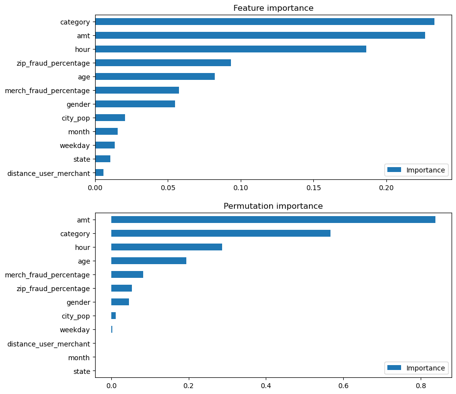
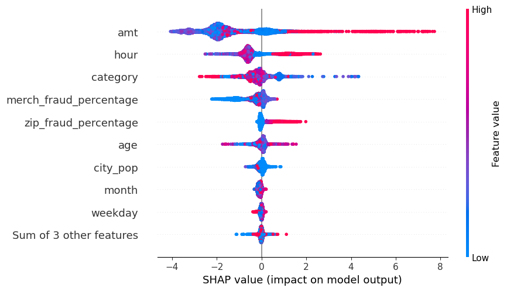

Fraud is constantly on the rise alongside technology. This makes fraud detection important. The big obstacle is to understand how to detect fraud. This project aims to understand which features have better ability to predict fraud. This is done with a credit card fraud dataset that gets analysed with supervised machine learning using the XGBoost algorithm.
The dataset is taken from Kaggle (https://www.kaggle.com/datasets/kartik2112/fraud-detection). It consists of 23 columns and 1,296,674 transactions. It has one binary column, is_fraud. With 0, the transaction is genuine and with 1, it is fraudulent. This will be the target variable. The dataset is highly imbalanced, as only 0.58% of all transactions are fraudulent. This is important to consider during the rest of the analysis.
I created new features:

To understand the most important features, I am using four measures:

Amount, merchant fraud percentage, zip code fraud percentage, and category are the most correlated with the is_fraud variable, while distance between user and merchant, weekday, and state are the least correlated.

In general, amount, category, and hour have the most effect on predicting fraud. Amount seems to have higher predicting power according to permutation importance, correlation matrix, and SHAP values.
Category is the most important feature according to the feature importance, with amount being a close second. Category and hour switch between being on the second and third places as important features. The exception is the correlation analysis, where previous fraud in the form of percentage of fraud for merchants and zip codes were more important than hour. Age has medium importance in all measures.

This beeswarm plot shows how each transaction contributed to the prediction of fraud. The values on the X-axis show if the feature lowers or increases the likelihood of fraud. The color shows if the features' values are high or low. Higher values of amount and hour seem to increase the likelihood of fraud. It seems that both lower and higher values decrease the likelihood of fraud. Category is a mixed bag, but it is a nominal variable and therefore the values themselves cannot say anything. Lower values of merchant fraud percentage lower the likelihood of fraud, while higher zip fraud percentages increase the likelihood of fraud. These features do not seem to have any bigger effect on increasing or decreasing the likelihood.
Amount should be examined further. It was the feature with the highest explaining power, but the relationship between amount and fraud seems quite fragmented. All fraudulent transactions in the dataset were in the 0-2000 USD group, with no high outliers, while the amounts for all transactions have more high outliers. Therefore, it is difficult to say if a certain amount predicts fraud, and the feature should be examined for how it predicts fraud.
Age seems to be mildly important according to the correlation and feature importance, but of low importance with SHAP.
Previous fraud seen in zip codes and merchants are moderately correlated with fraud, but are less important to predict fraud with the machine learning model. Zip code previous fraud percentage has low importance according to the SHAP values, but is higher according to feature importance, while merchant previous fraud is the other way around.
Location and time-based variables did not have an effect on predicting fraud, with the exception of hour. This could infer that the hour can predict fraud, as the EDA showed that most fraud takes place during 21:00-22:22 in the evening. Month was moderately correlated with fraud but lost all its importance for the machine learning model.
Amount, category, and hour are the features that can predict fraud the most, with previous fraud and age as complements. The variables amount and category should be explored to understand how they predict fraud and how they interact.